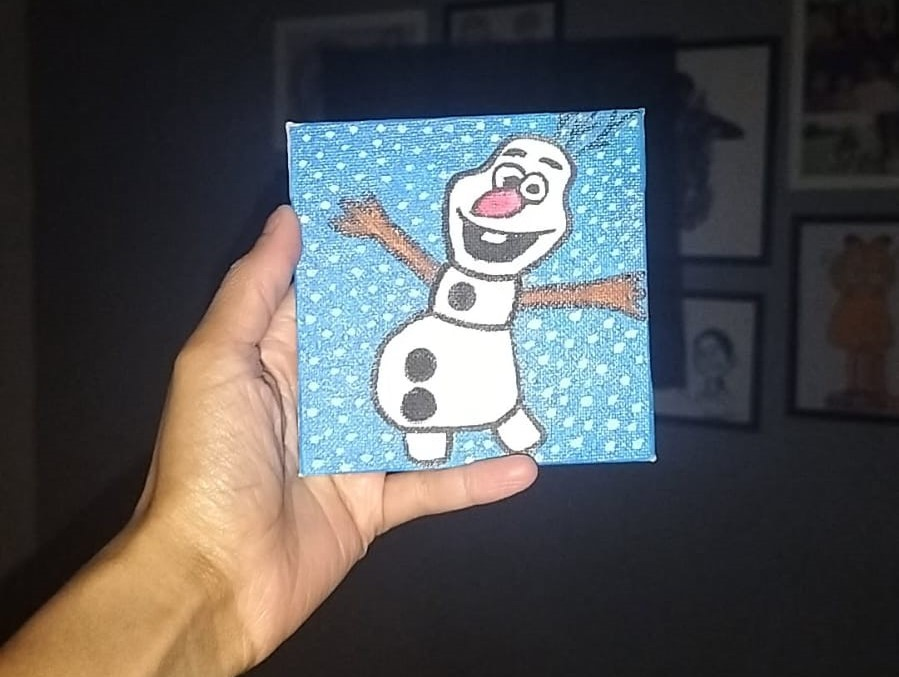

Snow much Fun !

In a flurry of frost and cottony white,
A snowman twirls with pure delight.
Buttoned up, with a carrot nose,
He spins and giggles as the cold wind blows.
Olaf’s laugh is warm as sun,
Melting hearts, one by one.
He dreams of summer, yet loves the snow,
Dancing wherever cold winds blow.
Arms out wide, he hugs the air,
With snowflakes tangled in his hair.
Each flake a friend, each gust a song,
In Olaf’s world, you can’t go wrong.
No need for boots, no need for hats,
He plays with squirrels, birds, and cats!
In frozen fields or icy run,
Every day is snow much fun!
So next time skies turn winter blue,
Think of Olaf, and smile too—
For joy is found in snowy sun,
And snowmen made for frosty fun!